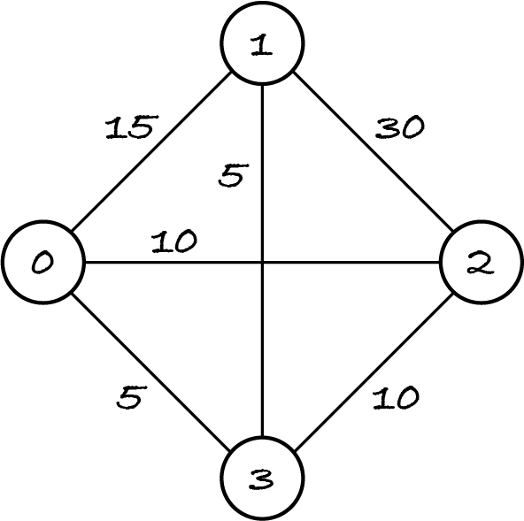
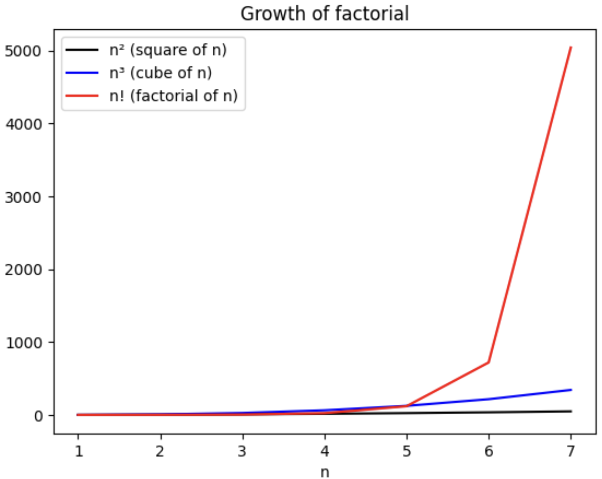

11.4. Searching permutations
As the previous section illustrated, an exhaustive search algorithm with n nested loops can generate all permutations of n items and test which of them satisfy the search conditions. That’s fine if n is small and known in advance, but if n is an input of the problem, how can we generate the permutations? This section shows how with a classic problem.
11.4.1. Problem
The travelling salesman problem (TSP) asks to find the shortest way to start in one place, visit other places only once and return to the start place, where ‘shortest way’ means the least total distance travelled.
A tour is a route that goes once through each place and returns to the start place, e.g. the route of a truck delivering or collecting goods across multiple places and returning to the warehouse. The TSP is thus asking for the tour with the least total distance, given the distances between n places. We assume there are at least two places, in order to travel to a place and back to the start place.
If instead of the distance we know the time or cost to go from one place to another, then the TSP asks for the respectively fastest or cheapest tour. If multiple tours are equally short, fast or cheap, then the output can be any of them.
Problems that ask for a collection of items that minimise or maximise some quantity are optimisation problems. When talking about optimisation problems in general, the quantity being minimised is traditionally called the cost, even if it represents something else, like distance, for particular problems. So, the TSP is an optimisation problem that asks for a tour among n places with the lowest cost, given the costs of travelling between any two places.
Info: The Robotics and AI block of TM129 introduces optimisation problems and the TSP.
To turn the informal description of the TSP into a problem definition, I must choose how to model places and costs. Whether we’re flying around the globe with a band, visiting castles in Scotland or island-hopping in the Azores, it doesn’t matter what and where the places are: all we need is the cost of travelling between any two of them. The costs must be given by numbers, so that we can add up the cost of the tour. Although costs are usually positive, I allow for zero and negative numbers, e.g. if we wish to represent the cost below or above a given travel budget.
There are several ways of representing the costs between pairs of places. A simple way of quickly looking up costs is to store them in a matrix. This means that places must be represented by natural numbers, in order to index the matrix. We have to decide whether the cost of going from origin to destination is in row origin and column destination, or row destination and column origin. It doesn’t matter which way it is, as long as we state it in the preconditions, so that the user knows how to fill the input matrix.
Next, the output: the best tour. It can be represented by a sequence of integers, indicating in which order the places are visited. The postconditions must state that all places occur in the tour and that the first and last place are the same. They must also define the optimisation criterion: the tour’s cost.
tour has length n + 1, with tour[0] = tour[n]
every integer from 0 to n − 1 occurs in tour
costs[tour[0]][tour[1]] + costs[tour[1]][tour[2]] + … + costs[tour[n − 1]][tour[n]] has the lowest possible value
Because the tour has length n + 1, with one duplicate place, all other places must occur once in the tour.
Here’s a depiction of the example I’ll use, with n = 4. In this example, travelling from A to B costs the same as from B to A. The places are numbered from 0 to 3 and indicated by circles. The cost of travelling between two places is indicated next to the line connecting the two places.
Can you find at least two tours with the same lowest cost? Two tours are different if their start/end place is different or if they visit the places in a different order.
Some of the tours with lowest cost 40 are (0, 1, 3, 2, 0), (1, 3, 2, 0, 1) and (3, 1, 0, 2, 3).
11.4.2. Algorithm
The exhaustive search algorithm is like a linear search for the best candidate, where the candidates are all possible tours and being better means to have a lower cost.
Tours that go through the same places in the same order have the same cost, so to find the best tour it doesn’t matter which place we start from, as the example above shows. We can choose place 0 to be the start and end place and generate all permutations of (1, …, n – 1) for the intermediate places.
We compute the cost of each candidate tour and see if it improves the current best cost, which is initially infinite. (If we were maximising a quantity, we’d initialise it with negative infinity.)
let best cost be infinite
for each places that is a permutation of (1, 2, …, n – 1):
let this tour be places with 0 prepended and appended
let cost be costs[this tour[0]][this tour[1]] + … + costs[this tour[n − 1]][this tour[n]]
if cost < best cost:
let best cost be cost
let tour be this tour
Exercise 11.4.1
In many real-life situations, the cost of going from A to B is the same as the cost of going from B to A, like in the example above. In such cases, will the algorithm generate different candidate tours with the same total cost?
11.4.3. Complexity
There are n × (n−1) × … × 2 × 1 permutations of n items, because the first item in the permutation can be any of the n items, the second item in the permutation can be any of the remaining n−1 items, and so on, until only one item remains to be put in the last position.
The product of all integers from 1 to n is written n! and is called the factorial of n. There’s only one permutation of zero items, the empty sequence, so 0! = 1.
The exhaustive search for the best tour among n places only generates the permutations of (1, …, n – 1), because the start/end place is fixed, so the complexity is Θ((n−1)!).
The factorial grows much much faster than the square or the cube of a number. A picture shows it best.
As the chart shows, 5! is about the same as 5³ (the red and blue lines cross at n = 5) but from then on the factorial function leaves the cubic function in the dust, and n² looks like a constant function (the black line is flat) in comparison to n!.
I once asked the driver delivering my supermarket online shopping how many customers he served in one tour with a full van. He said about fifteen. Assuming we can compute the cost of each tour in 1 µs, we can obtain a van’s best tour in 15! µs. Python’s math module provides a function to compute the factorial.
[1]:
from math import factorial
print(factorial(15), "µs")
1307674368000 µs
That’s a huge number. Let’s see how many days that is.
[2]:
MS_PER_DAY = 24 * 60 * 60 * 1000 * 1000 # microseconds in a day
print(factorial(15) // MS_PER_DAY, "days")
15 days
By comparison, if the van delivers to 10 customers, then the best tour can be computed in just …
[3]:
MS_PER_S = 1000**2 # microseconds in a second
print(factorial(10) // MS_PER_S, "seconds")
3 seconds
This shows again how fast the factorial function grows.
As you may imagine, delivery companies don’t use exhaustive search, with factorial complexity, to compute the best tour. They use heuristic algorithms which compute an approximate ‘good enough’ solution, rather than the optimal one. A heuristic algorithm for the TSP will be presented in Exercise 18.3.1.
Exercise 11.4.2
The previous exercise showed that the algorithm generates ‘symmetric’ tours. Would the complexity improve if the algorithm could be modified to not generate them?
11.4.4. Code
To generate permutations, we use function permutations in module itertools. The function is meant to be used in a for-loop because it returns the permutations one by one, as a tuple. The function’s argument is an iterable collection of items.
[4]:
from itertools import permutations
for permutation in permutations({"travelling", "salesman", "problem"}):
print(permutation)
('travelling', 'problem', 'salesman')
('travelling', 'salesman', 'problem')
('problem', 'travelling', 'salesman')
('problem', 'salesman', 'travelling')
('salesman', 'travelling', 'problem')
('salesman', 'problem', 'travelling')
Let’s construct the matrix of the example input. The cost of ‘travelling’ from a place to itself can be any number, because it won’t be used by the algorithm, but it’s usually set to zero.
[5]:
four_places = [
[0, 15, 10, 5], # cost from 0 to other places
[15, 0, 30, 5], # cost from 1 to other places
[10, 30, 0, 10], # cost from 2 to other places
[5, 5, 10, 0], # cost from 3 to other places
]
I use slightly different variable names from the algorithm to keep the code lines short.
[6]:
from itertools import permutations
import math
def tsp(costs: list) -> tuple:
"""Solve the travelling salesman problem.
Input: costs is a n*n matrix of numbers
Preconditions:
- n > 1
- costs[i][j] is the cost of travelling from i to j
Postconditions:
- len(output) = n + 1
- output[0] = output[n]
- every integer from 0 to n - 1 occurs in the output
- costs[output[0]][output[1]] + ... + costs[output[n-1]][output[n]]
has the lowest possible value
"""
best_cost = math.inf # positive infinity (Section 6.8)
n = len(costs)
# generate all permutations of (1, .., n-1)
for places in permutations(range(1, n)):
# tuple literals with 1 item need extra comma (Section 4.5)
tour = (0,) + places + (0,)
cost = 0
for index in range(0, n):
cost = cost + costs[tour[index]][tour[index + 1]]
if cost < best_cost:
best_cost = cost
best_tour = tour
return best_tour
tsp(four_places)
[6]:
(0, 1, 3, 2, 0)
There are two equally best tours starting and ending at place 0, namely (0, 1, 3, 2, 0) and (0, 2, 3, 1, 0), but only the one generated first is output as the second one doesn’t improve the best cost.